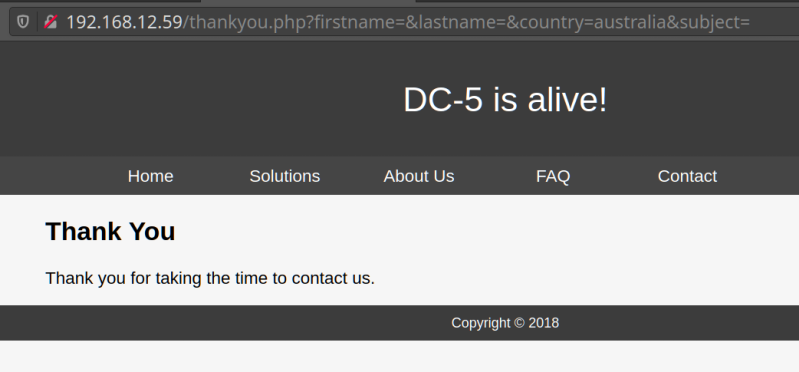

Most of these we’ve already seen just from navigating the site, however, thankyou.php is new. You can also find it by completing the contact form. The thankyou.php page doesn’t look too interesting until you refresh it a few times.

You can see the year change every time you refresh the page. It's a strange behavior.